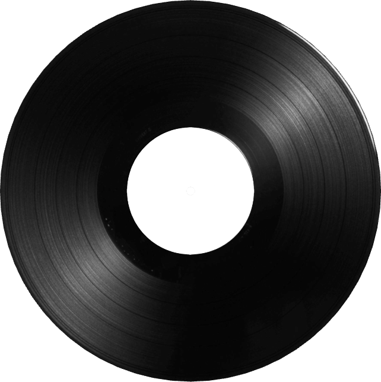
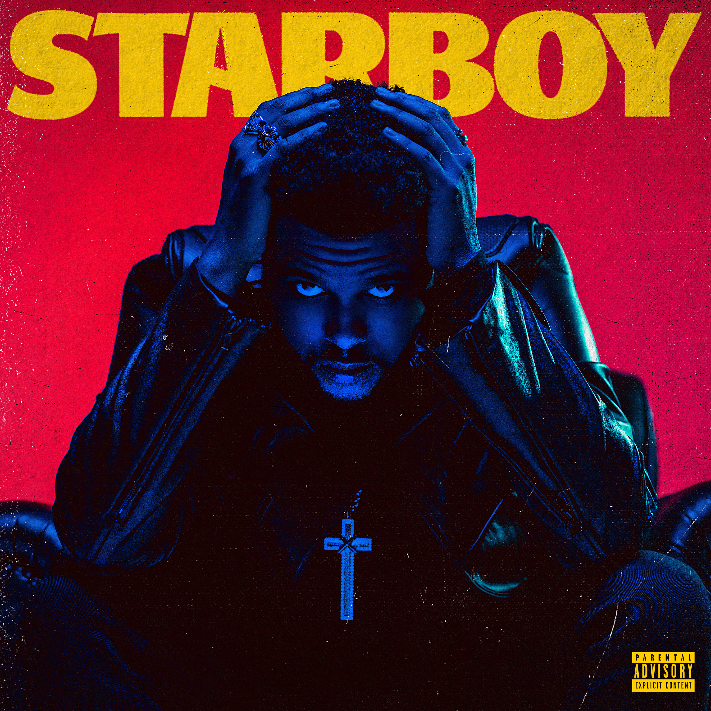
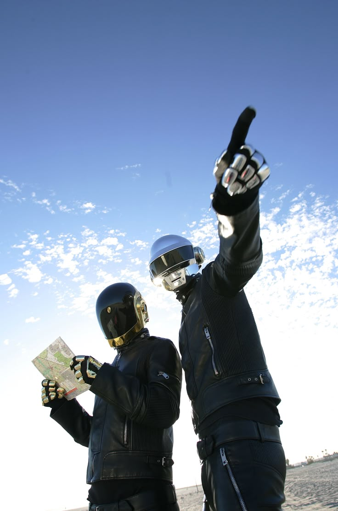
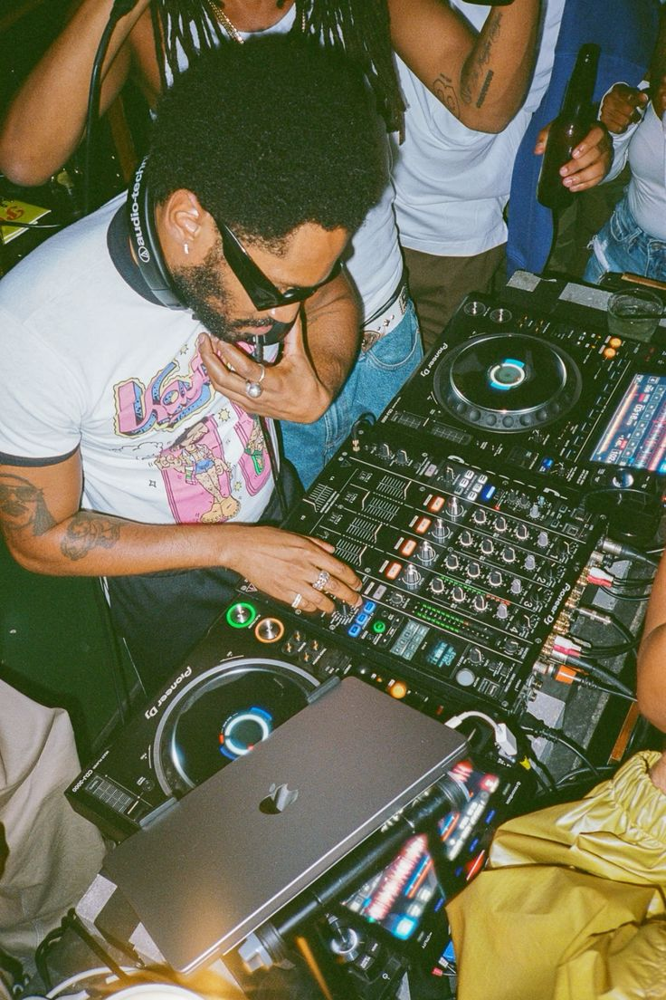
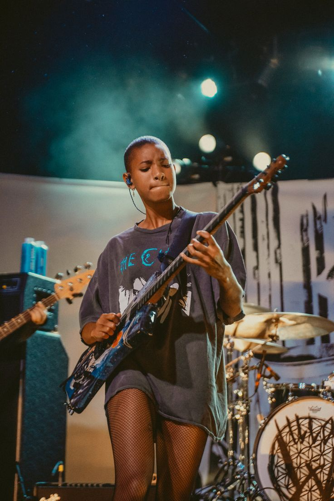

Music
Welcome to my music page — this is where I share the sounds that are basically always in the background of my life. Music is a big part of how I think, focus, and create, whether I’m working on designs, coding, or just zoning out and getting inspired by something new.
My taste jumps between different moods and genres, but everything here connects to how I feel or what I’m into creatively at the time. Some songs hit hard and energetic, others are more atmospheric or emotional, but they all play a role in shaping my ideas and mindset.
Try messing around with the vinyl image. Change the record image or even upload your own and see how it looks!


My Favourite Artists
My Favourite Albums
My Favourite Songs
My Favourite Genres



Electronic
Electronic music will always sit at the top for me. I find it genuinely fascinating how much emotion can be communicated with little to no lyrics, just sound, texture, and atmosphere. It also connects closely to my interest in tech and digital creativity, almost like the music itself feels engineered but still deeply human. There’s something powerful about that balance, where machines and emotion overlap in a way that just works.
Standout Artists
Daft Punk, Gesaffelstein, Justice, Paradis, Crystal Castles